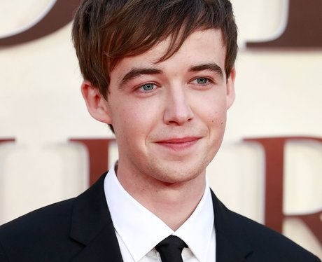

|
Finn Wolfhard (n. 23 de diciembre de 2002; Vancouver, Columbia Británica)
es un actor canadiense. Es más conocido por el papel de Mike Wheeler en
la serie original de Netflix Netflix, Stranger Things; e interpreta a
Richie Tozier en la película de 2017 y IT 2 2019 It Tambien es guitarrista
y vocalista principal en su propia banda Calpurnia la cual ya ha asistido
a varios conciertos y festivales de musica como OSHEAGA.
|
|  |
Alexander Jonathan Lawther, conocido como Alex Lawther
(n. Petersfield, Hampshire; 4 de mayo de 1995), es un actor británico.
Es conocido por interpretar el papel del joven Alan Turing en la
película The Imitation Game (2014), el cual le valió un premio al
"Artista británico joven del año" en los premios London Film Critics'
Circle y por interpretar a James en la serie de comedia negra de
Netflix The End of the F***ing World (2017).
|
|
 |
Asa Maxwell Thornton Farr Butterfield (Londres, 1 de abril de 1997)
es un actor británico. Ha trabajado, entre otras películas, en
el niño con el pijama de rayas, Hugo, de Martin Scorsese y
en El juego de Ender, adaptación de la novela homónima de Orson
Scott Card, dirigida por Gavin Hood. En 2019 protagonizó la serie
de Netflix Sex Education.
|
|
Jessica Barden (Northallerton, North Yorkshire, 21 de julio de 1992).
Actriz inglesa mejor conocida por el papel de Kayleigh Morton
en la serie Coronation Street. También ha sido coprotagonista
de la serie del Canal 4, The End of the F***ing World, junto
a Alex Lawther y ha aparecido en largometrajes como The Chase
y No Angles. |
|
Katherine Langford (Perth; 29 de abril de 1996) es una actriz australiana,
más conocida por su papel como Hannah Baker en la serie de Netflix,
13 Reasons Why, por la cual ha recibido una nominación a los Globos de Oro.3
La joven actriz Katherine Langford protagonizará la nueva serie de Netflix
titulada “Cursed”. La producción basada en el libro homónimo de Tom Wheeler
contará con un total de 10 episodios y de acuerdo a información brindada
por la revista Variety, se estrenará en el 2020 |
|
Millie Bobby Brown (Marbella; 19 de febrero de 2004) es una actriz y modelo británica.
Inició su carrera en la actuación desde muy pequeña cuando se mudó a Orlando, Florida,
Estados Unidos, en 2011. Salto a la fama por su interpretación del papel de Once en
la serie de Netflix, Stranger Things.23
Su debut en el cine se llevó a cabo en 2019 con la película, Godzilla: King of the
Monsters, donde interpretó el personaje de Madison Rusell.
Ha sido galardonada con diversos premios, entre ellos, un Premio Saturn a
«mejor actriz joven en una serie de televisión», y ha sido nominada a los Premios Emmy
y al Sindicato de Actores de Cine (SAG, por sus siglas en inglés). |